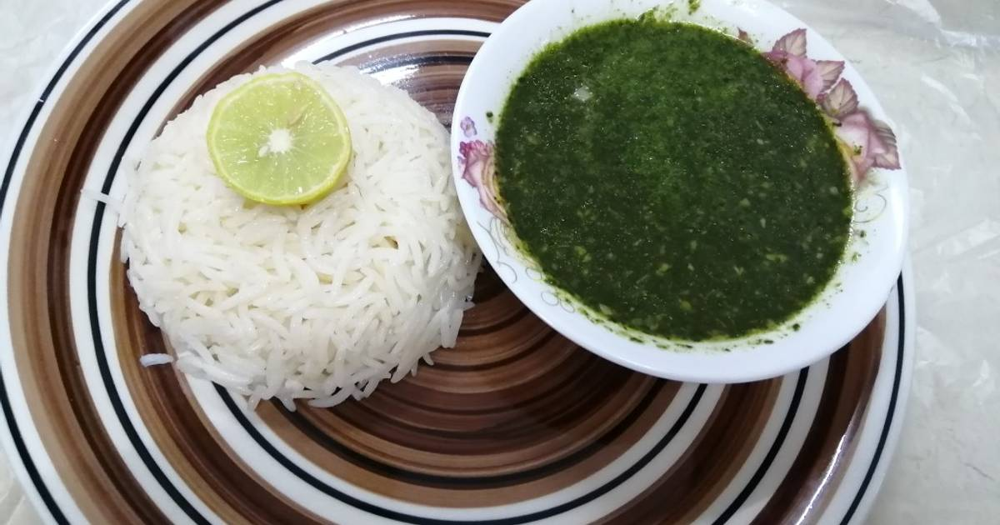

Green Molokhia

Description
Molokhia is one of the famous and delicious vegetables that has a special
place in the hearts of Egyptians, and it is presented in Egypt in a unique
way worldwide. The method of making green Molokhia is easy and simple, but
it needs some tricks to have a distinctive taste and a well-adjusted
texture.
Ingredients
- A bunch of Molokhia
- Chicken soup
- 7 large cloves of garlic, finely minced
- Salt
- Black pepper
- A dash of cumin
- A dash of spices
- A dash of dried coriander
- 2 tablespoons of local butter
How to prepare
-
We prepare the Molokhia and wash it well, and we remove the leaves from
the stems.
-
Then we chop the Molokhia, but it can be made in an electric blender
with a little water and we beat it until we get the right texture.
-
Then we put the Molokhia in a pot and add to it 3 cups of chicken or
meat soup.
-
Then we add to it 2 cloves of minced garlic and season with salt,
pepper, a dash of cumin, and a dash of spices.
-
Then we raise the pot on the fire and stir well and increase the soup
until we get the appropriate texture of the Molokhia. Some people like
it heavy in texture and others prefer it light, so the texture must be
adjusted according to desire.
-
In the meantime, we prepare a frying pan and put the butter in it and
raise it on the fire and when the butter melts we add the garlic and
stir quickly then we add a dash of salt, black pepper, cumin, and dried
coriander.
- We stir on low heat until the garlic turns brown.
-
Then we remove the pan from the fire and as soon as the Molokhia boils
we add the pan and let it boil once.
-
Then we pour the Molokhia into serving dishes and serve it hot next to
the rice with vermicelli and roasted chicken.
- Molokhia can be served next to all types of food.
Back to Home